Turn は 360° の環境を生成し、選んだ視点から最終画像を制作します。
Turn はまず空間を構築し、3D Preview でカメラアングルを選ばせ、最後に Production で被写体と演出を加えます。
Freeze Frame はリファレンスとなるカット、Final Still は被写体・アクション・ライティング・スタイルを適用した完成結果です。
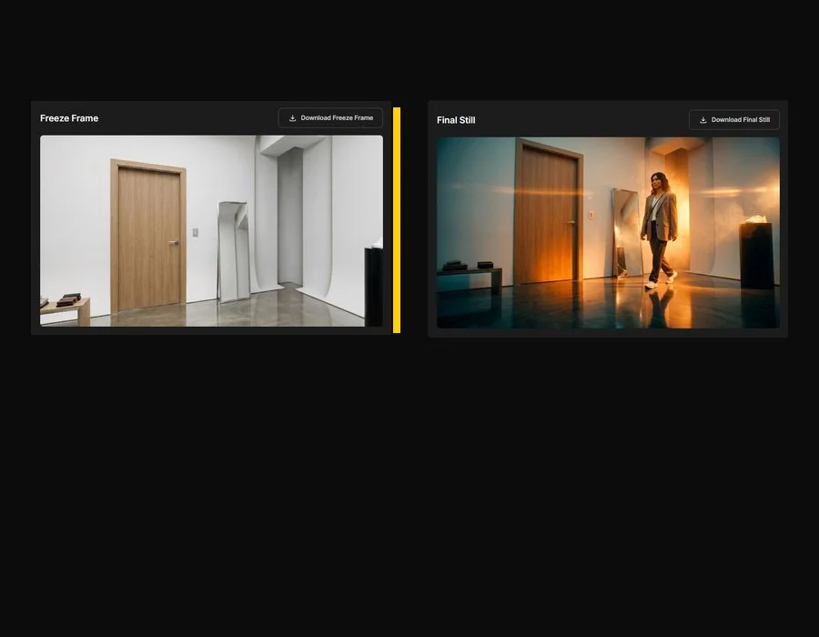
同じ空間の中で複数のクリエイティブ案を素早く比較できます。
本番撮影の前に、ライティング・被写体の配置・スタイルの雰囲気を異なるバージョンで試せます。
クライアントに素早くビジュアル提案を見せたいとき（広告カット、商品のエディトリアル、EC の詳細、ストーリーボードなど）に有効です。
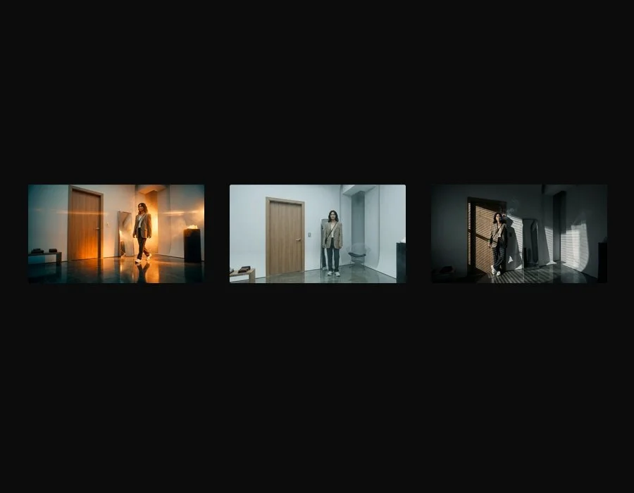
背景生成・部分編集・被写体の合成を1つの流れで行いたいとき。
リファレンスがない場合はプロンプトだけから始め、空間のレイアウトをより正確に固定したい場合は画像 1 枚（または 4 方向の画像）を添付します。
生成した環境を Cube Map で方向ごとに編集し、最後に Cast Reference で顔と衣装のリファレンスを適用します。
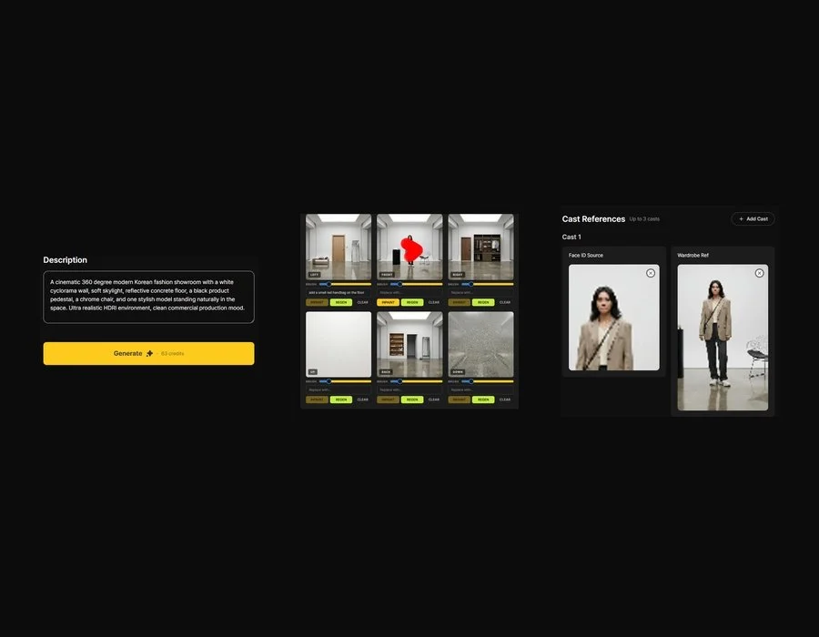
Reference → HDRI → Production → Final Still。
ステップ 1 ではプロンプトまたは方向別の画像を受け取ります。ステップ 2 で 360° の HDRI と Cube Map を確認します。
Freeze Frame で視点を決めたあと、ステップ 3 の Production でキャラクターのアクション・ライティング・シネマスタイル・キャストを適用します。
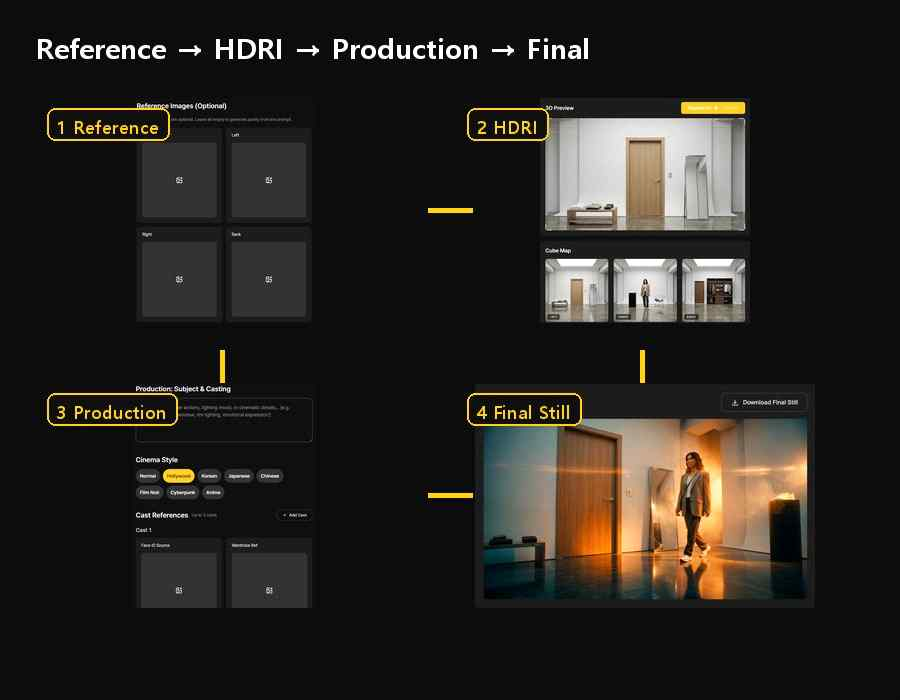
左サイドバーの Turn アイコンをクリックします。
Xconda にサインインしたら左の縦メニューを下にスクロールすると、Turn の項目が現れます。
クリックすると Reference、HDRI、Production の3ステップのワークスペースが開きます。
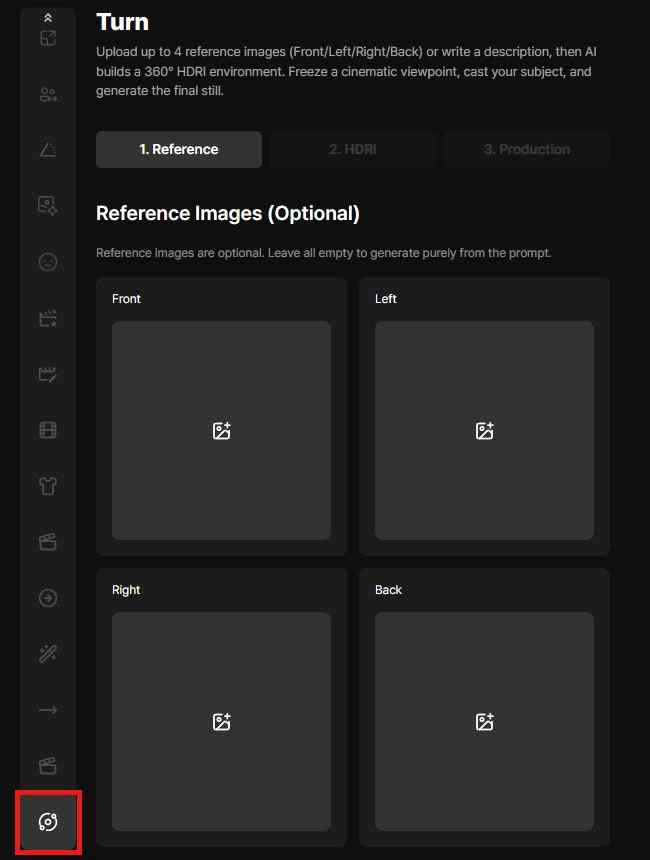
Front / Left / Right / Back のスロットが利用できます。
前面・左・右・背面のスロットに画像をドロップすると、その方向を基準にした 360° 環境が生成されます。
4 つすべてを埋めても、1 つだけ使っても、すべて空にしてプロンプトだけに頼ることもできます。
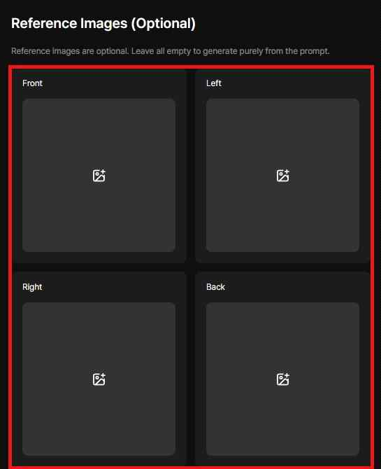
説明だけで 360° 環境を生成できます。
リファレンス画像がなくても、描写が具体的であれば Turn が背景を構成します。
説明の中に被写体・商品・小物・ライティングの雰囲気を書くと、空間内の物体や人物の配置を方向づけられます。
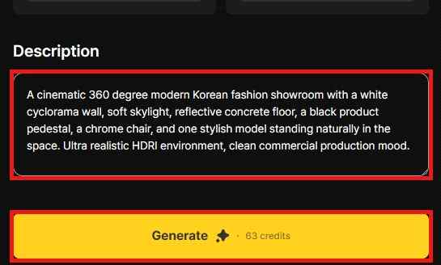
入力がそろったら Generate を押します。
このステップで HDRI 環境の生成が始まります。クレジットを消費し、完了するとステップ 2 の HDRI 画面へ進みます。
生成された 360° 空間を 3D Preview で確認します。
キャンバスをマウスでクリック＆ドラッグすると、環境の周りを自由にカメラで回り込めます。
狙いのアングルが見つかったら、Freeze Frame エリアの Generate ボタンを押してその視点を切り取ります。
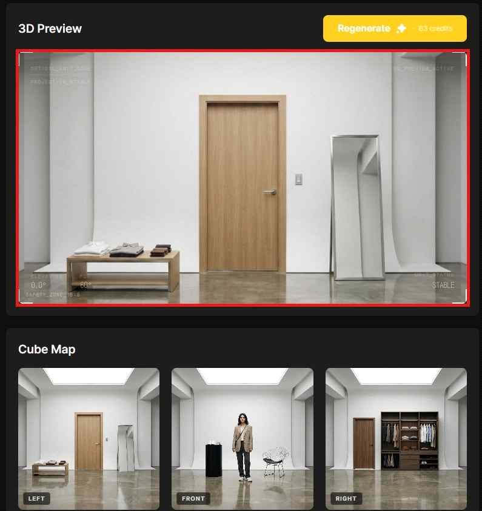
クリック＆ドラッグでカメラの向きを調整します。
Turn はまず 360° 環境全体を構築し、その中から好きな構図を選ばせます。
シーンの中心、被写体を置く予定の位置、カメラの向きを確認し、Freeze Frame に適したアングルを探します。
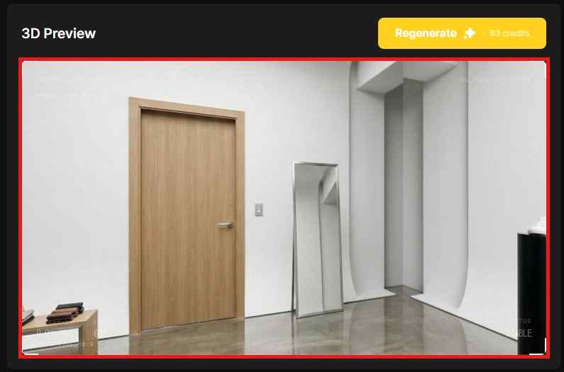
Left、Front、Right、Up、Back、Down を個別に確認します。
Cube Map は 360° 環境を 6 つの方向面に分解します。
各面にはそれぞれ Brush、Replace with 入力、Inpaint、Regen、Clear の操作があります。
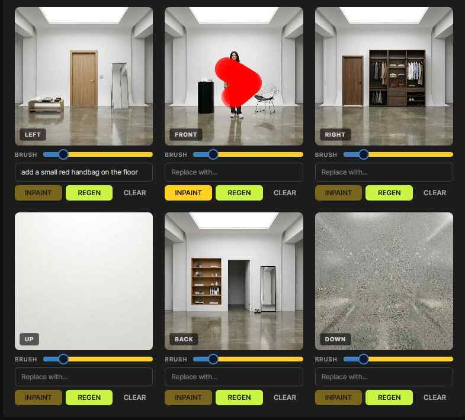
選んだ面のディテールをプロンプトで書き換えます。
Cube Map で面を選び、Replace with フィールドに変更内容を入力します。
例：床に赤いバッグを追加、壁に窓を追加、椅子を別の小道具に差し替え。
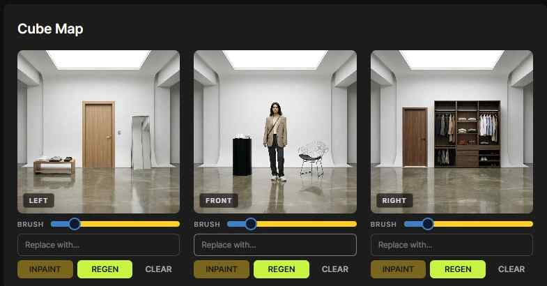
編集を塗った範囲に限定します。
キャンバスに塗ると、塗った領域に赤いマスクが作られます。
Replace with を空のまま Inpaint を実行すると、ブラシが削除ツールとして働き、マスクした物体を消します。
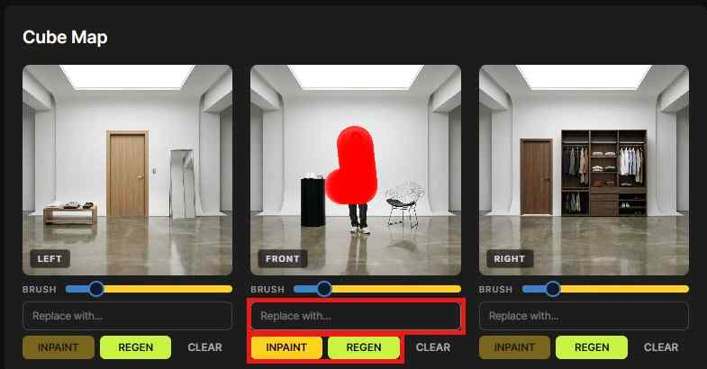
フィールドに入力して、マスク内のオブジェクトを追加・変更します。
マスクを定義したら Replace with に新しいプロンプトを入力すると、Turn がその位置にオブジェクトを追加したり、既存のディテールを変更します。
ブラシは広げすぎるより、対象より少し大きめにするほうが安定した結果になります。
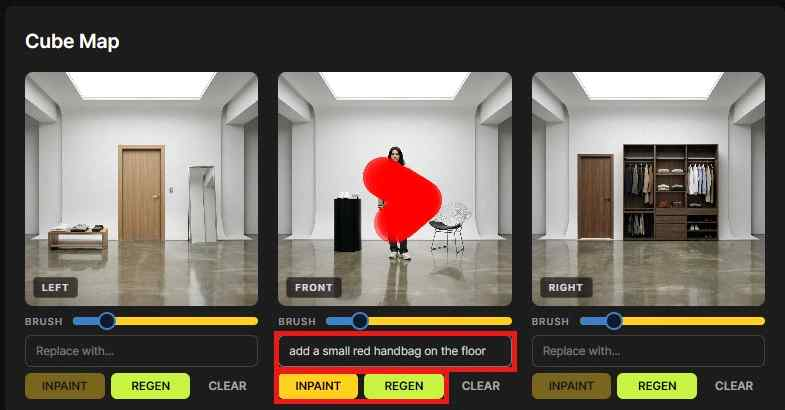
BRUSH スライダーでブラシのサイズを調整します。
小さな小物や顔の近くは小さめのブラシ、壁・床・大きな家具は大きめのブラシを使います。
ブラシサイズを調整すると、マスクをより正確に描けます。
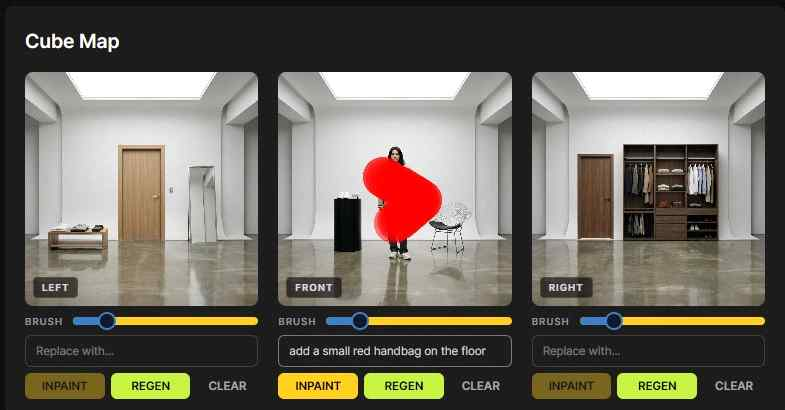
Clear は塗ったブラシマスクを消します。
間違った場所を塗った、または選び直したい場合は、Clear を押すと現在の面のブラシ跡が消えます。
Clear は再生成ボタンではありません — 選択をリセットするだけで、それ以外のことはしません。
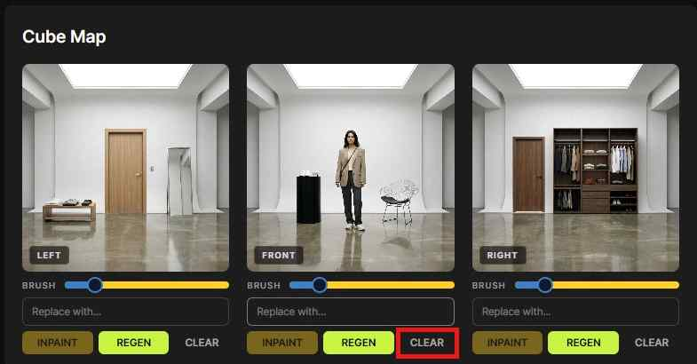
REGEN は面全体を一から再生成します。
面の見た目が不自然、または全体の構図がうまくいかないときに REGEN を使います。
Inpaint と違い、方向面の画像を丸ごと作り直すため、変化がはるかに大きくなります。
3D Preview で選んだ視点を Freeze Frame として保存します。
Freeze Frame は最終結果の手前にあるリファレンスシーンです。
右上の Download Freeze Frame ボタンで、この中間画像を別途ダウンロードできます。
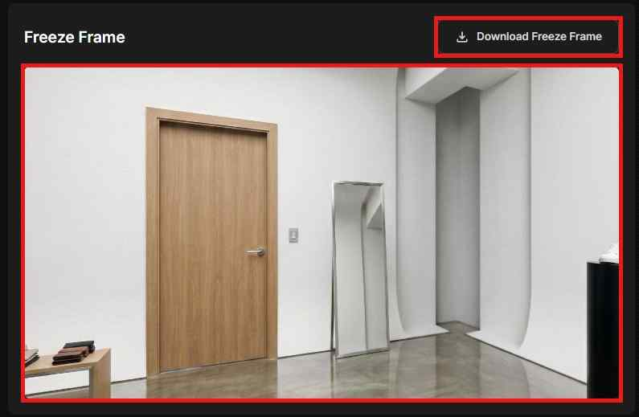
Subject & Casting に演出を記述します。
このフィールドでキャラクターの感情・ポーズ・アクション・ライティングの雰囲気・シネマティックなディテールを決めます。
例：窓辺に立つ、リムライト、自然な笑顔、張りつめた影、エディトリアル広告の雰囲気。
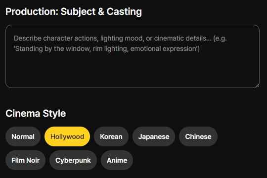
結果のシネマティックな色調を選びます。
現在のオプションは Normal、Hollywood、Korean、Japanese、Chinese、Film Noir、Cyberpunk、Anime です。
スタイルを切り替えると、同じ Freeze Frame でも色・ライティング・コントラスト・全体の雰囲気が変わります。
顔と衣装のリファレンスを別々に用意します。
保持したい顔を Face ID Source に、衣装とスタイリングのリファレンスを Wardrobe Ref にドロップします。
両方を使うと、被写体の顔と服装について Turn に明確な方向性を与えられます。
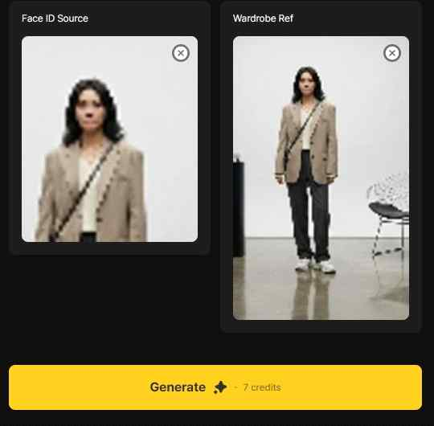
Generate を押して Final Still を制作します。
Production の入力と Cast Reference がそろうと、最終の Generate ボタンが有効になります。
生成後、結果画像は右の Final Still パネルに表示されます。
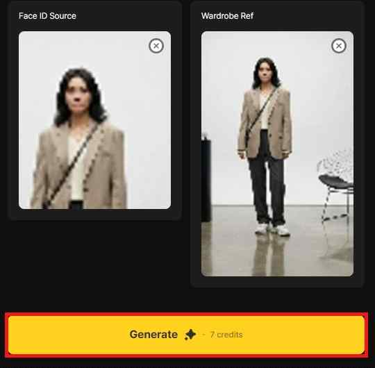
Hollywood スタイル / 強いリムライト。
同じ Freeze Frame に対し、高級広告のライティングでモデルが歩いてくるプロンプトを指定しました。
結果は暖かな光と強いレンズフレアで、コマーシャルなエディトリアルのルックになりました。
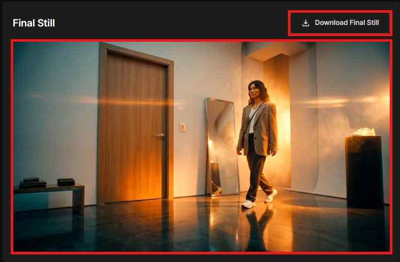
Korean スタイル / クリーンな広告トーン。
自然なポーズと、明るくクリーンなビューティー広告のライティングをプロンプトに使いました。
同じ空間ですが、被写体の配置・表情・全体のトーンがより穏やかで軽やかになりました。
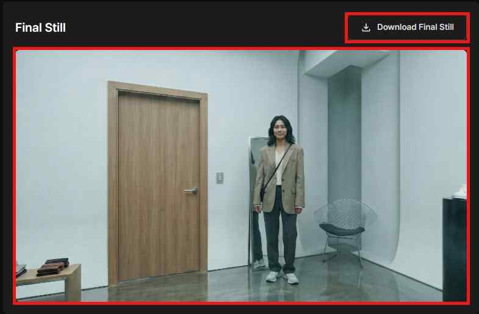
Film Noir スタイル / ドラマチックな影。
ドアにもたれる被写体、強いサイドライト、高コントラスト、緊迫した雰囲気をプロンプトに入れました。
暗いライティング、ブラインドの影、高まったドラマ性のある結果になりました。
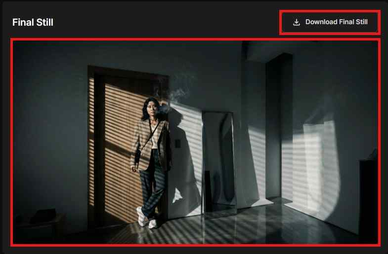
Freeze Frame はアングルを切り取り、Final Still は演出した結果です。
Freeze Frame は HDRI ステップで選んだ基本のカメラ視点です。
Final Still は、Production の被写体・スタイル・ライティング・アクションの演出を適用した最終画像です。
Freeze Frame は個別にダウンロードできます。
Production 前のリファレンスシーンが必要なとき、またはアングルを共有してレビューしたいときに使います。
右の Freeze Frame パネルにある Download Freeze Frame ボタンを押します。
Final Still も単独でダウンロードできます。
納品用ファイルやクライアント共有用ファイルには Download Final Still ボタンを使います。
Freeze Frame と Final Still は別のステージの成果物です — ダウンロードボタンは区別して使いましょう。
4 つのリファレンスパターンはそれぞれ特定の状況に向いています — 目の前の作業に合うものを選びましょう。
空間を素早く下書きしたいとき、またはまだリファレンス画像がないときに使います。
既存の背景画像を 360° 空間に拡張したいときに使い、その雰囲気を基準にします。
空間の前・左・右・背面を明確に固定したいときに使います。
生成後に、特定の面の要素（窓・家具・小物・被写体・壁のディテール）だけを変えたいときに使います。
Turn ワークフローの要点 — 各ステージの役割と、各出力の目的。
Turn は背景生成、3D 視点の選択、部分編集、被写体の演出、最終スチルの作成を、1 つの連続したワークフローにつなぎます。
Reference が入力素材を用意し、HDRI が空間と視点を確定し、Production が被写体とシネマティックなディテールを適用します。
Freeze Frame は中間リファレンス、Final Still は演出済みの最終画像です。目的が異なるため、それぞれ別にダウンロード・管理します。